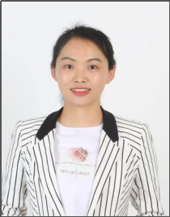
中国医学论坛报社 · 编辑 ｜ 医学媒体采编 / 学术内容策划 / 项目管理
拥有多年医学媒体采编、学术内容策划与新媒体平台运营经验，擅长医学文稿撰写、外文医学文献编译与学术内容质控，能够独立完成前沿循证资料查证与双语内容加工，具备扎实的医学英文读写与海外专家沟通协作能力。
联系邮箱：wenxiu_0713@163.com会议报道、专家访谈、综述与科普多体裁写作，兼顾学术严谨与可读性
独立完成前沿循证资料查证与双语内容加工，医学英文读写扎实
独立对接国际知名学者完成约稿、专访与稿件审阅沟通
深入 ESMO、ASCO GI、CSCO、CODHy、CSE 等国际国内学术会议现场第一线
微信公众号多矩阵运营经验，长图、漫画等融媒体形式策划制作
长期维护内分泌、肾病、肿瘤等领域核心专家，独立策划并管理系列医学栏目项目
长期对接与维护的国内外专家（部分），照片均摄于采访、约稿与学术会议现场。滑动浏览，悬停可暂停。
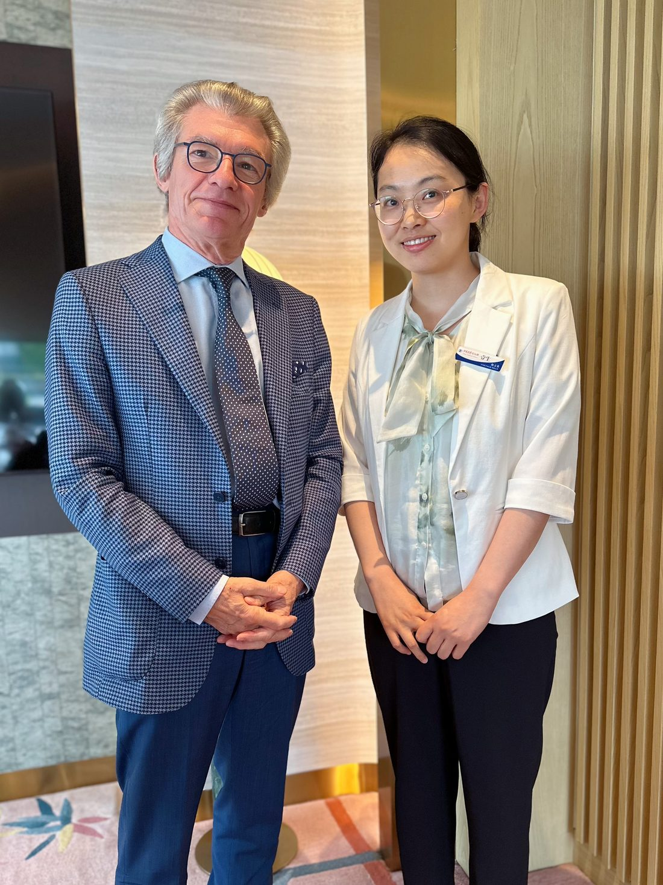
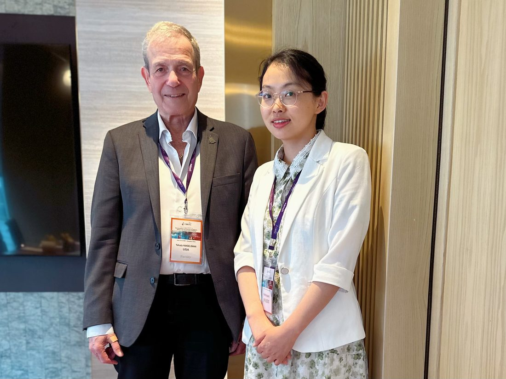
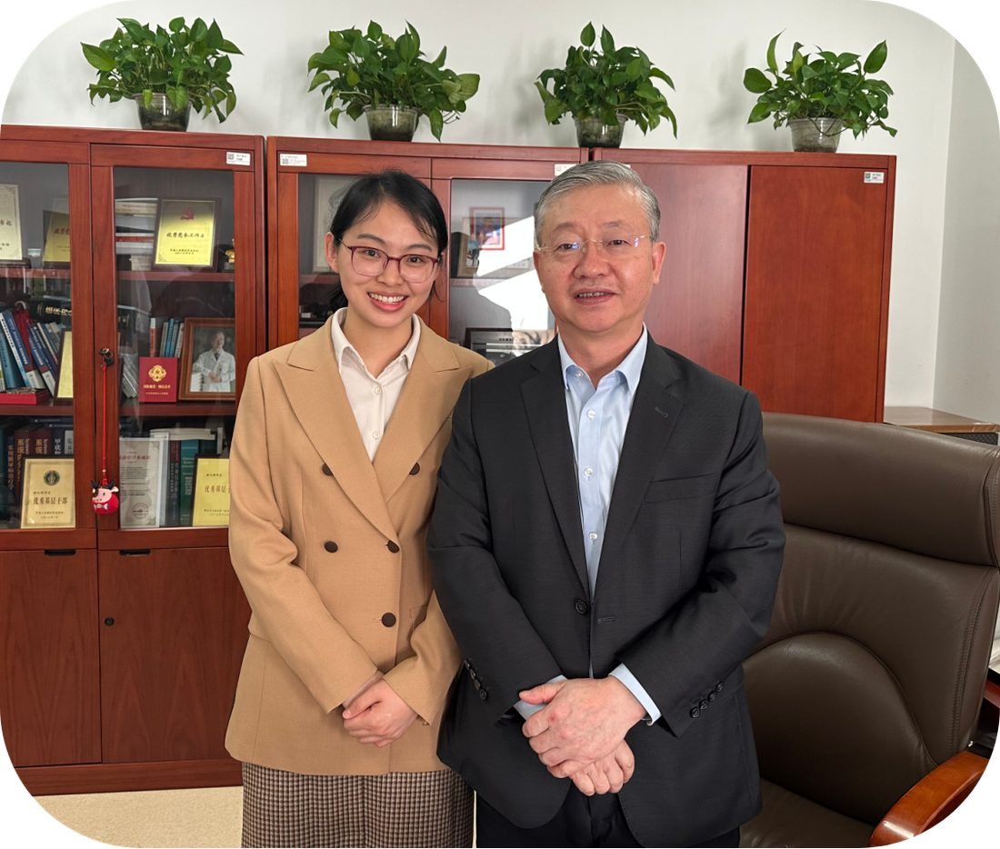
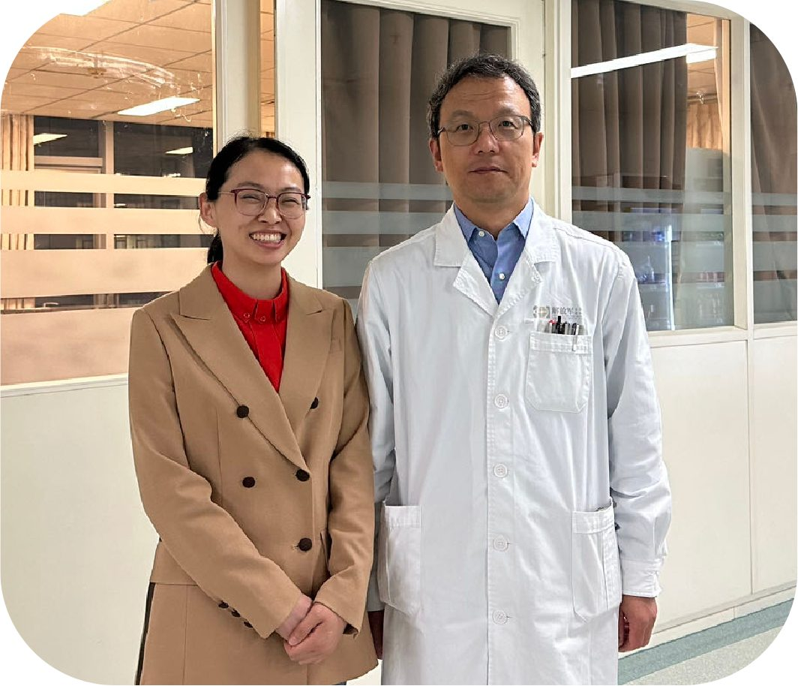
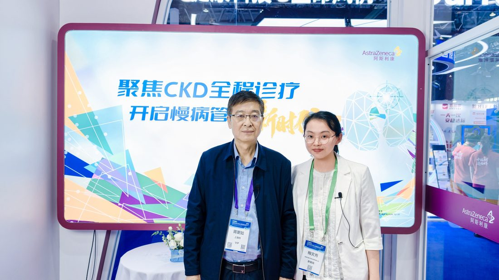
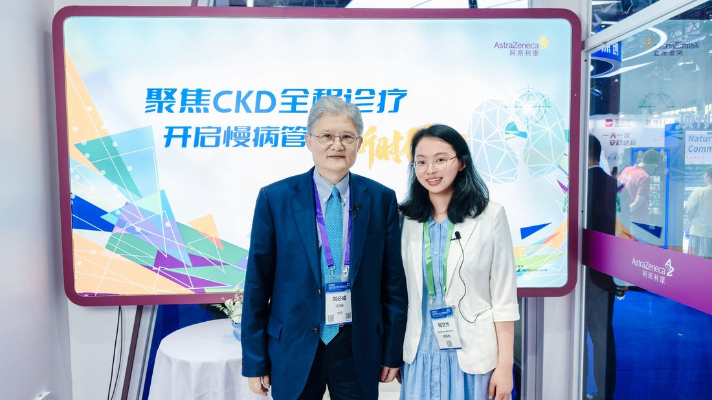
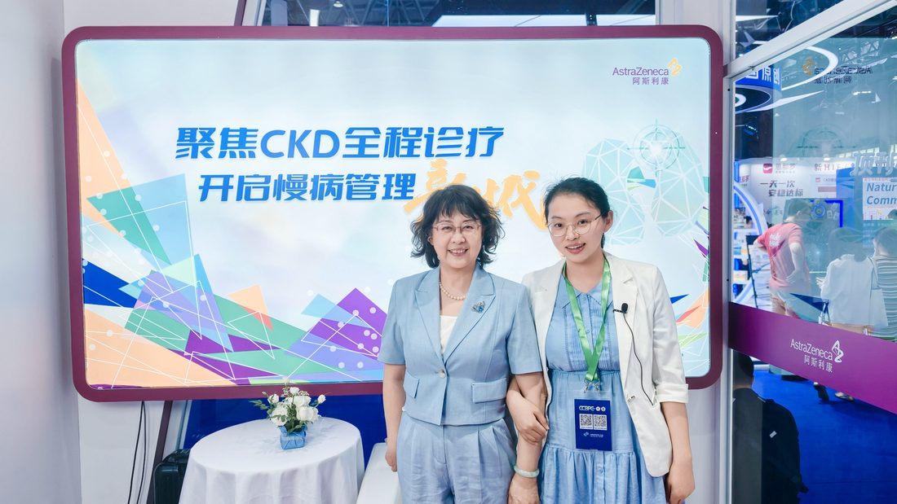
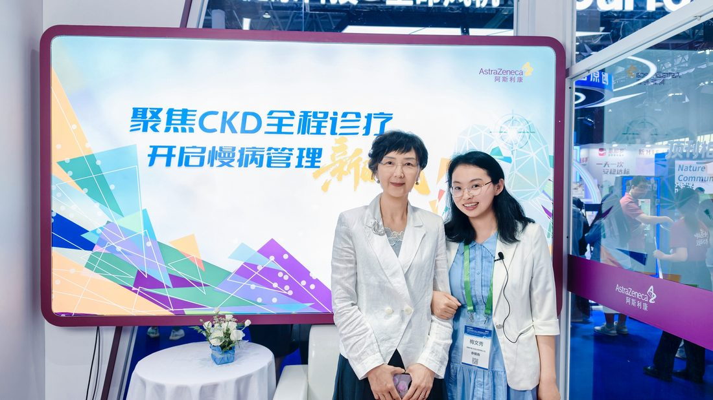
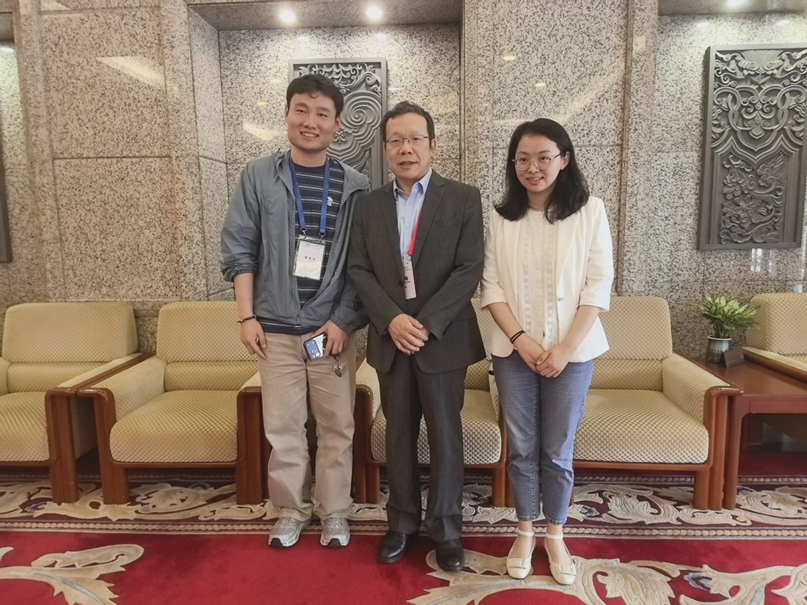
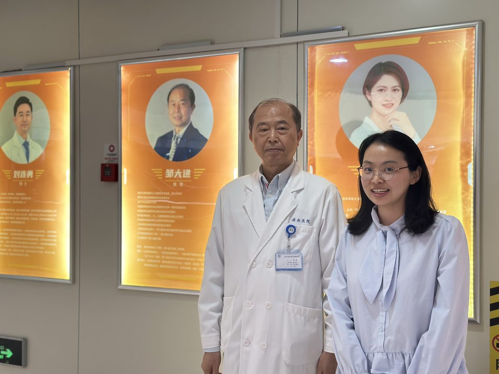
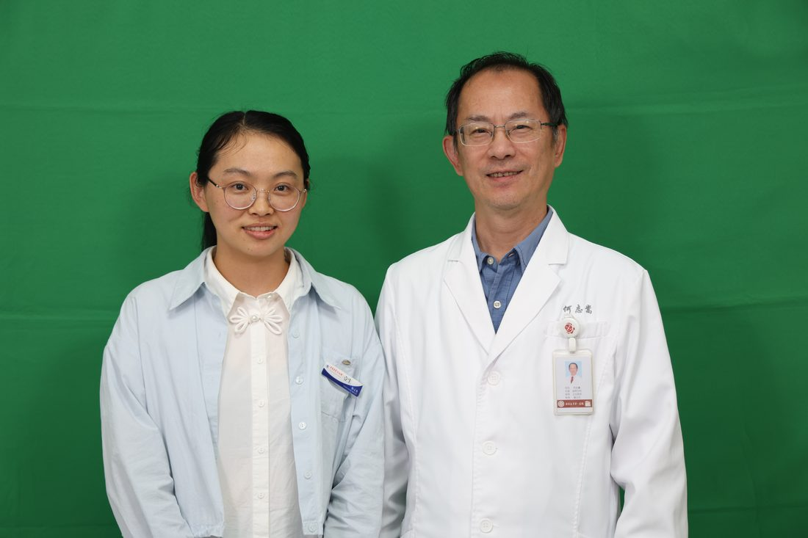
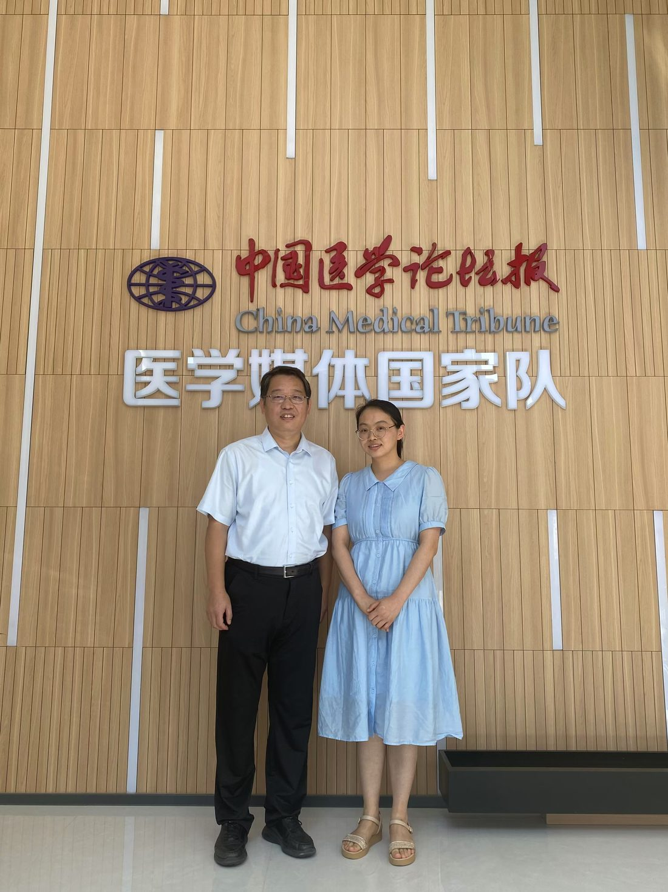
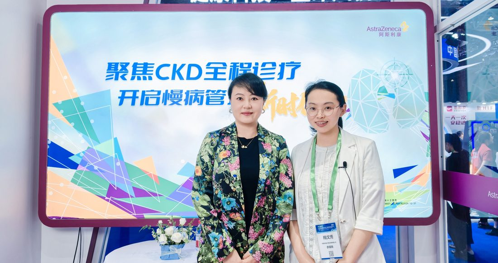
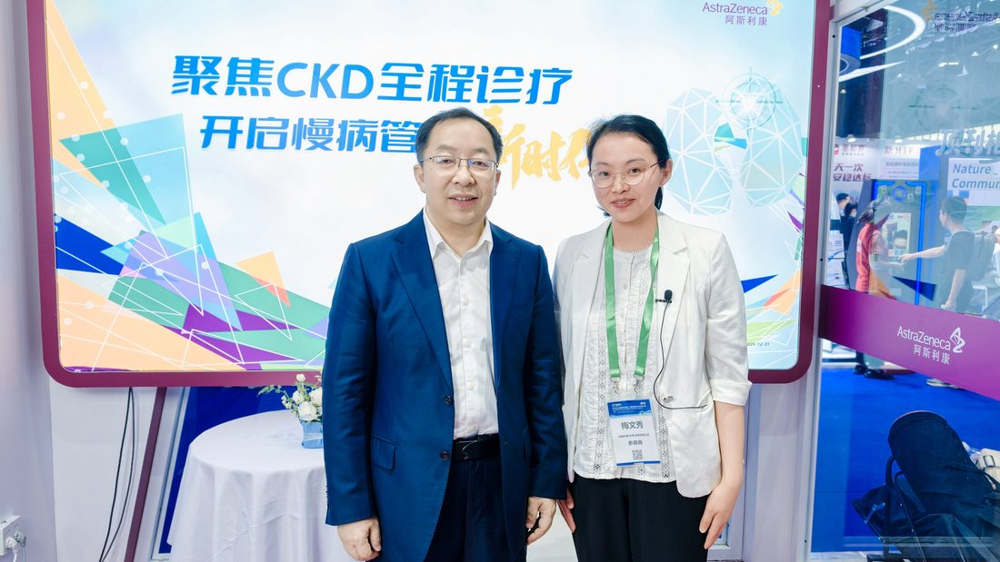
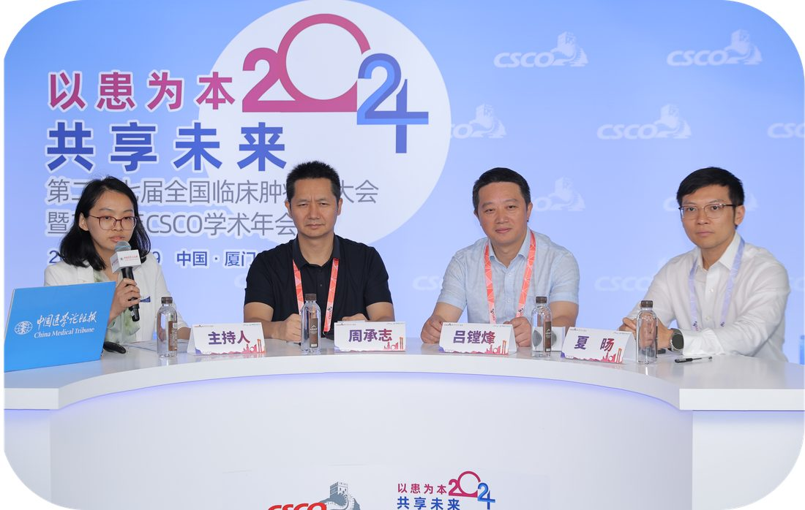
策划并落地的系列医学课程与直播栏目，覆盖心血管、肾病、重症等领域，累计观看量超 2600 万人次。
聚焦内分泌科青年医生群体，以真实临床病例为切入点，提炼核心临床知识点，转化为普通大众可理解的轻量化科普内容。从选题策划、专家邀约到内容审核与上线运营全流程执行。
查看项目页面 →